3 Actions with Model Context Protocol for AI agents
This chapter covers
- Understanding MCP fundamentals for agent development
- Getting started with MCP servers
- Using MCP servers with agents
- Building MCP servers for agents
In chapter 2 we examined an agent’s core components. This chapter discusses the Model Context Protocol (MCP), the connector that empowers agents. MCP is often described as the USB-C for agents and LLMs because it provides a standard protocol for agent tools. More importantly, as we develop complex research agent workflows, it opens up a landscape of tools our agents can use.
MCP adoption in the AI space has been so quick and widespread that almost anything we want our agents to do is likely supported by an MCP server. Not only that, but we can also build our agents as consumable MCP servers. This allows us to connect complex agentic workflows as tools to other agent workflows so we can build agent-specific workflows that can be reused like components.
In the following sections, we will examine the fundamentals of MCP architecture and then explore building and using servers with agents to understand how MCP transforms agent capabilities.
3.1 Understanding MCP fundamentals for agent development
Before diving into agent-specific implementations, we need to understand what MCP is, why it exists, and how it fundamentally changes the way we build AI systems. MCP is an open standard created by Anthropic, based on JSON-RPC 2.0, designed to let AI systems connect to external services consistently, securely, and efficiently.
3.1.1 The standardization problem MCP solves
Before MCP, developers building AI agents faced several critical challenges, which made agent development complex and brittle. Figure 3.1 highlights the main challenges developers face when building agent and LLM applications.
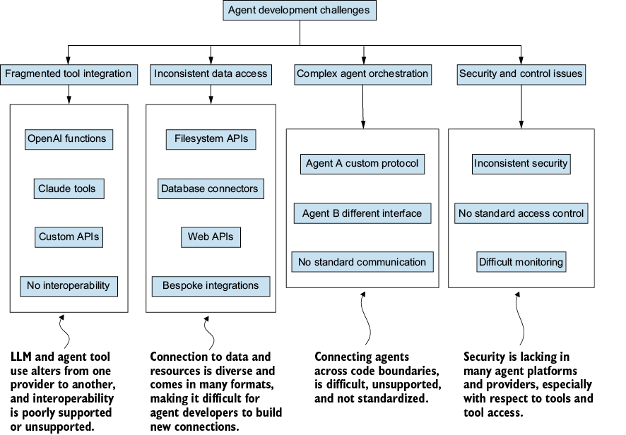
Figure 3.1 The leading challenges developers face when building agents include fragmented tool integration, inconsistent data access, complicated multiple-agent orchestration, and security and control.
As the figure shows, developers faced multiple challenges when building agents for LLMs. The first problem was fragmented tool integration, or handling multiple ways of defining tools depending on the LLM provider. These challenges affected developers on projects of all scales, from small single-agent systems to more complex multi-agent workflows.
A second problem was inconsistent data access. Connecting agents to external data sources required custom solutions for each source. Your agent might need one interface for filesystems, another for databases, and another for web APIs. Each integration was a bespoke solution that was hard to maintain and reuse.
Since each AI model or agent framework defines and calls tools differently, a tool built for OpenAI’s function calling would not work with Anthropic’s Claude without significant modification. In practice, that modification meant rewriting the tool’s JSON schema to match the provider’s expected format, restructuring how parameters are described and typed, changing how tool results get returned to the model, and often reworking the agent’s response-handling code to parse a different tool-call envelope. None of these changes were conceptually hard, but each one required reading provider-specific documentation, testing against the live API, and maintaining a parallel implementation. For a team supporting two providers, this meant doing the same engineering work twice. For a team supporting four, the math got worse than linear because every cross-cutting change (a new tool, a schema fix, a behavior tweak) had to be propagated through every implementation.
Complex agent orchestration and communicating with external agents was another obstacle. When you wanted multiple agents to work together, each needed custom integration code. No standard way existed for one agent to expose its capabilities to another, making complex multi-agent workflows difficult to implement.
Finally, there were security and control issues. Without standardized protocols, it was challenging to implement consistent security measures, access controls, and monitoring across different tools and data sources.
MCP solves all these problems by providing a unified protocol that standardizes how agents interact with external systems. Thus, agent development becomes more like assembling standardized components rather than building everything from scratch.
3.1.2 MCP architecture: Clients, servers, and services
Remember before USB-C became the standard connection, when every device, including phones, cameras, tablets, and headphones, had its own proprietary connector? With the adoption of USB-C, we can now connect easily using one cable for all devices that support it and not worry about individual cables and adapters. Without MCP, your agent faces a similar challenge: each tool or service you want to connect to requires its own custom integration. Figure 3.2 shows the problem of connecting your agent to multiple services and resources.
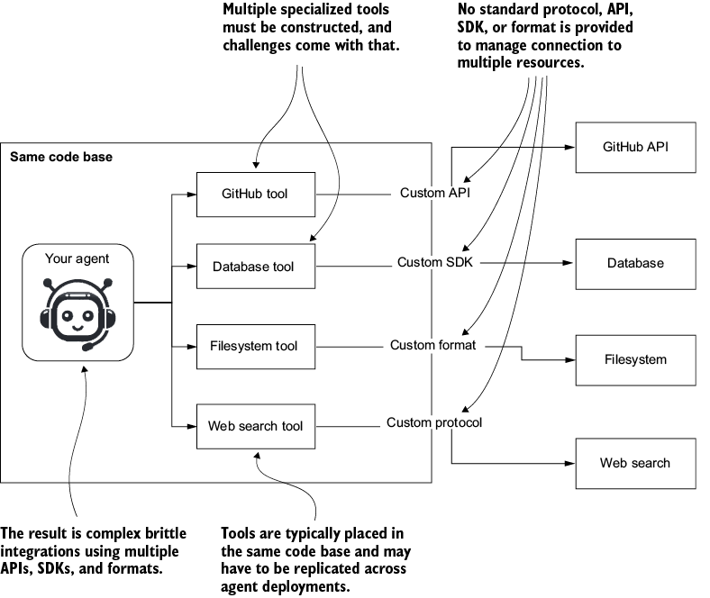
Figure 3.2 A typical problem agent/LLM developers face when connecting to multiple services and resources is the lack of standardized connections and the need to support multiple connectors for whatever services they need to access.
The figure shows an example of an agent that needs to connect to multiple services and resources. Before MCP, the agent developer would have had to construct these tools and manage the complexity of connecting to APIs, SDKs, and protocols, as well as formatting results. If you wanted to build a capable agent, most of your work would have involved creating the tools to power that agent.
MCP changed all that by introducing a standard communication protocol and a way to abstract the messy tool implementations from the agent codebase. Now, an agent developer connects to the MCP server that wraps the service they want, and the protocol handles the integration plumbing. The protocol does not eliminate every concern; security and authentication, error handling, server versioning, and server availability are still real things you will manage in production. What MCP removes is the per-provider schema and call-format work that used to dominate tool integration, which is enough to change how agents get built. Figure 3.3 shows the change from heavy internal tool implementations to MCP for common external resources.
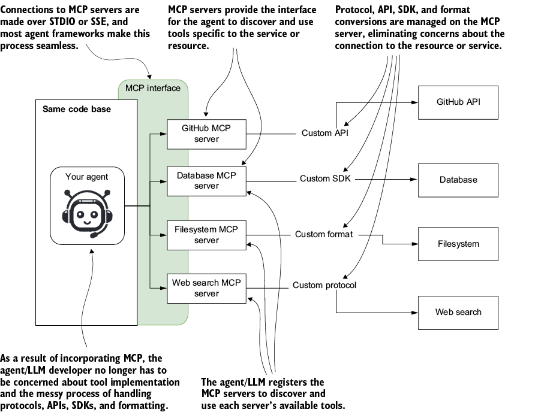
Figure 3.3 Implementing MCP as a service layer abstracts access to the various services that an agent may want to connect to and use.
Continuing with the single-agent example, when using MCP, we only need to write a few lines of code to connect to the server and then register it with the agent. Most modern AI agent frameworks now support simple, seamless integrations with MCP. There is even a growing community of developers implementing MCP servers to connect any AI agent or LLM.
To simplify this further, we consider the MCP ecosystem to come in three components: the client, the server, and the underlying service the server connects to (a database, an API, a filesystem, a SaaS product).
Note that “service” here is our term for what sits behind the server, not an MCP-defined word. MCP itself defines three capability primitives that a server can expose to a client: tools (actions the agent can perform), resources (data the agent can read), and prompts (templates the server provides for common interactions). We will stick to using only tools in this chapter because that is where most agent work happens. Figure 3.4 shows a three-component view of the ecosystem, along with examples of clients and services that can be integrated.
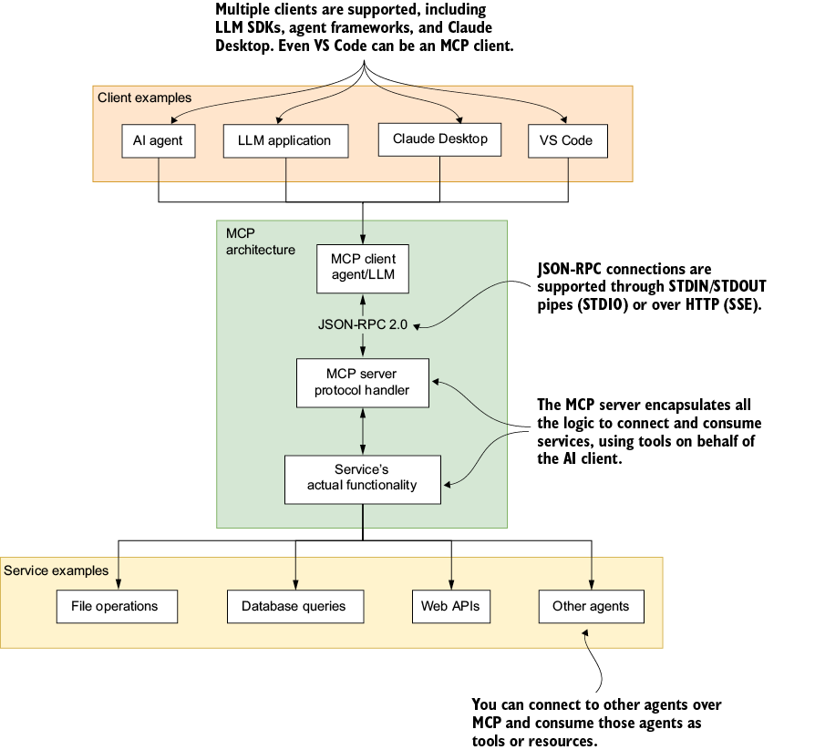
Figure 3.4 The basic components of MCP architecture are clients, servers, and services. Here, you can see some common clients (agents, LLM applications, Claude Desktop, and VS Code) and potential services (file operations, database queries, web APIs, and other agents) that the clients might connect to.
The figure shows these basic components of the MCP architecture:
- MCP client—MCP is not just for agents; it is also available to many AI-powered applications and LLMs. The client is responsible for connecting to the server and using discovery resources to find the tools and other resources it can use.
- MCP server—The server handles client requests and provides access to tools, resources, and services. It processes requests and sends back responses using the standardized JSON-RPC 2.0 protocol.
- Service—Represents the application or resource, whether for file operations, database queries, web searches, or other AI agents. Using MCP to connect to agents works the same way as using a tool. This approach can work well, but it requires enhanced functionality, you may want to look at protocols like A2A.
Communication between MCP clients and servers uses JSON-RPC 2.0, which ensures that requests and responses are exchanged in a consistent, structured way regardless of the service being accessed.
3.1.3 Core components: Tools, resources, and prompts
Every MCP server provides functionality through three types of components, each serving a specific purpose in agent workflows: tools, resources, and prompts. Figure 3.5 illustrates these three components and their consumption.
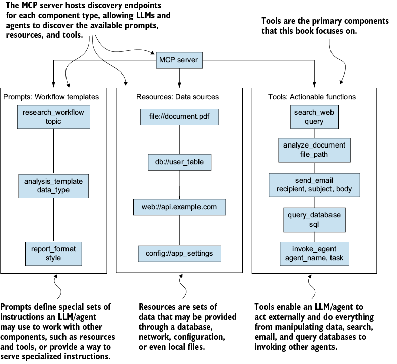
Figure 3.5 The main components of an MCP server include prompts, specialized system instructions, resources (used for access to files), configuration, databases, and tools, which are extensions of an internal agent’s ability to consume and use tools.
The MCP server provides discoverable endpoints, such as list_tools, that allow an LLM or agent to identify elements within that component. Below is a summary of the components an MCP server may expose:
- Tools—Tools are the actionable capabilities an agent or LLM can invoke to perform external tasks. They are generally the primary component of an MCP server that an agent will consume to complete work. Not every MCP client supports all three capability primitives. Some clients only consume tools, which has led some server authors to wrap prompt-style or resource-style functionality inside a tool so the client can still access it. This is a workaround, not a substitute. Tools, resources, and prompts are functionally distinct and serve different purposes.
- Resources—Represent external databases, files, configurations, or other entities that LLMs/agents may consume.
- Prompts—Function as pre-defined templates that standardize how agents interact with complex workflows or with the specialized tools and resources a server provides. A useful distinction across the three primitives is who decides when they get used. Tools are model-controlled. The agent decides during the conversation whether and when to invoke a tool based on what the user asked for. Resources and prompts are typically user-controlled or application-controlled. The user explicitly selects a prompt template to run, or the client surfaces available resources as something the user can attach to the conversation. This is the pattern Claude Desktop, Cursor, and other MCP clients use, and it is why the three primitives exist as separate categories rather than being merged into one. Tools are for the agent to reach for; resources and prompts are for the user to hand to the agent.
NOTE In this book, we generally focus on using tools from MCP servers. The OpenAI Agents SDK currently doesn’t support resources and prompts, which is acceptable because tools can take on their role. But if you use another agent framework that supports resources or prompts, consider using those components for their intended purpose.
In the next section, we examine how MCP servers can be deployed and accessed.
3.1.4 MCP deployment patterns for agents
MCP servers can be deployed in different configurations depending on your agent architecture needs. Figure 3.6 shows the three ways an MCP server may be connected to agents or an LLM: local deployment, remote deployment, or a hybrid architecture. In this book, we focus primarily on how agents use MCP, but it is essential to remember that MCP is not just for agents.
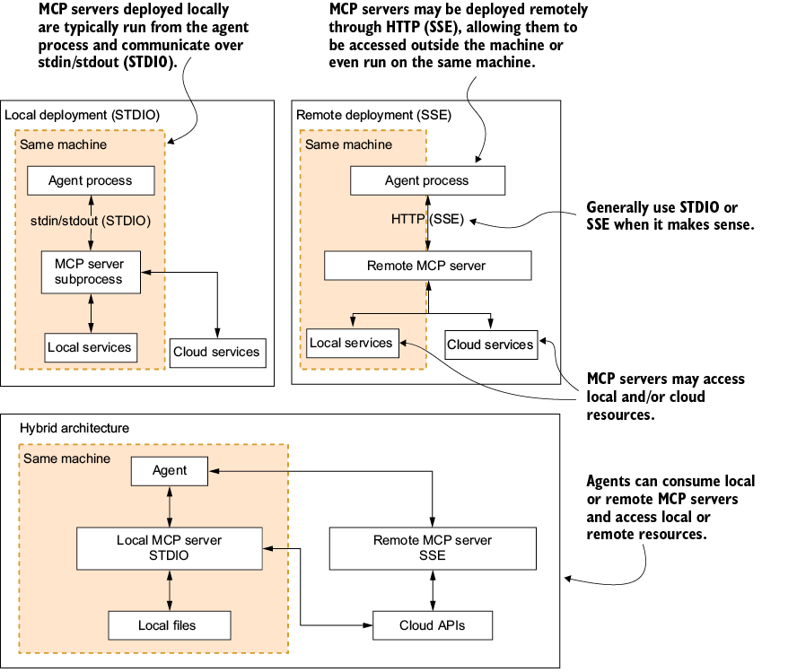
Figure 3.6 The various deployment patterns that may be used to connect MCP servers to agents. These range from running locally within a child process on the same machine to running remotely and being accessible over HTTP, including hybrid architectures that blend local and remote MCP servers for a single agent
From the figure, we see the various ways MCP servers can be deployed and consumed by agents. Servers may run locally as a child process, communicating over standard input/output pipes, or remotely. Remote servers may be external to the agent process on the same machine or externally hosted over HTTP. You can also use a combination of local and remote MCP servers in a hybrid setup.
Following is a breakdown of the various deployment patterns you may use to communicate with agents, though these patterns may also be used by LLM applications:
- Local deployment (STDIO transport)—When MCP servers run on the same machine as your agent, they communicate through standard input/output streams. This approach offers
- Low latency communication
- No network overhead
- Simple process management
- Ideal for development and single-machine deployments
- Remote deployment (SSE transport)—When servers run on different machines, communication happens over HTTP using server-sent events (SSE). This enables
- Distributed agent architectures
- Shared tool servers across multiple agents
- Scalable, cloud-native deployments
- Multitenancy and load balancing
- Hybrid deployments—Real-world agent systems often combine both patterns:
- Local servers for sensitive operations (file access, local databases)
- Remote servers for shared services (web search, external APIs)
- Agent-to-agent communication through remote MCP servers
Mixed local and remote setups
A given MCP server is either local or remote. There is no in between for a single server. What real-world agent systems often do is connect to multiple MCP servers simultaneously, and that mix usually includes both local and remote servers. An agent might connect to a local filesystem server, a local Git server, a remote GitHub server, and a remote Slack server within the same session. Each server runs in its own deployment mode, and the agent treats them all the same at the protocol level. This is what people sometimes mean when they say “hybrid deployment,” but the more accurate framing is that the agent uses a mix of servers, not that any one server is hybrid.
While our primary focus is on agents with MCP, it can be helpful to examine how LLM applications such as Claude Desktop can use MCP servers.
3.1.5 MCP powers the functional agent layers
While MCP will generally be consumed as a tool, we should not limit ourselves to thinking of it as just a tool. MCP can be integrated into the functional layers we use to describe agents, as we discussed in chapter 1. Figure 3.7 demonstrates how agents may use MCP through the various layers.
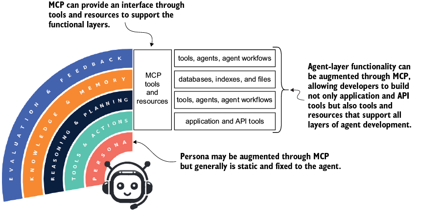
Figure 3.7 MCP can be used to add functionality in the form of tools to all the functional agent layers.
From the figure, we can see how the functional agent layers may be supported or enhanced by tools hosted on MCP servers. Each layer consumes a specific type of capability:
- The tools and actions layer connects to applications and APIs the agent acts on. Examples include the GitHub MCP server (creating issues, opening pull requests), the Slack MCP server (posting messages, reading channels), and a filesystem server (reading and writing local files).
- The reasoning and planning layer connects to servers that enhance how the agent thinks through a problem. The sequential thinking server is the canonical example, providing a structured chain-of-thought workflow that the agent can invoke when a task needs explicit planning. Memory-aware reasoning servers and graph-of-thought servers also fit here.
- The knowledge and memory layer connects to storage and retrieval. Examples include a Postgres MCP server (running queries against a relational database), a vector database server like Qdrant or Turbopuffer (semantic search over embeddings), a Google Drive server (reading documents the user has access to), and memory servers that persist facts across sessions.
- The evaluation and feedback layer connects to scoring, judging, and human-in-the-loop tools. Examples include LLM-as-judge servers that score agent outputs against rubrics, eval framework servers that run benchmark suites, and approval-routing servers that pause the agent until a human reviews and confirms a step.
Remember, MCP represents a connection pattern for agents that is not limited to tools and actions but can also support functionality across all agent layers, from reasoning/planning to knowledge/memory and evaluation/feedback.
3.2 Getting started with MCP servers
Anthropic developed MCP as a standard to enhance the use of LLM tools. Claude Desktop, also designed by Anthropic, demonstrates how an LLM can connect to and consume MCP servers.
Claude Desktop is a free tool from Anthropic that you can install on your computer. It provides the same access as the web version and adds local capabilities, including direct support for connecting MCP servers from your machine. We use Claude Desktop in this chapter because it offers the most direct path from the configuration file to a working MCP integration, making it a clean teaching environment.
By 2026, MCP support extends well beyond Claude. ChatGPT, Gemini, and most major IDEs and agent frameworks (Cursor, VS Code, Claude Code, Windsurf, the Vercel AI SDK) all support MCP servers. The patterns you learn here transfer across clients because the protocol is the same. What changes between clients is the configuration surface and the specific capability primitives each one supports.
Figure 3.8 illustrates how Claude Desktop connects to and consumes MCP servers. Refer to appendix B for instructions on installing and preparing MCP for Claude and for general development; these setups will be used in subsequent code examples.
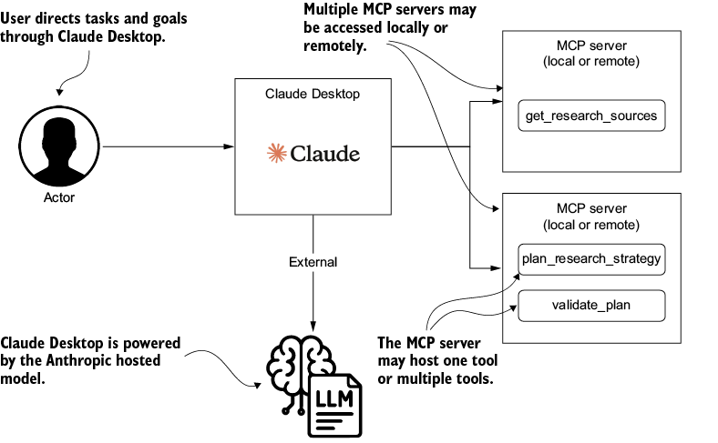
Figure 3.8 Claude Desktop may consume multiple MCP servers deployed locally or remotely. The LLM that powers Claude then uses the MCP components (generally tools) to enhance its capabilities.
As you can see, Claude can be configured to consume from multiple MCP servers, each with numerous tools. These servers can run locally on the same machine or remotely over HTTP. After a connection to an MCP server is configured, the underlying LLM powering the desktop registers and consumes the tools, prompts, and resources to determine how they can be used.
3.2.1 Coding up an MCP server for Claude
Listing 3.1 shows a simple MCP server that exposes a single get_research_sources tool. We already built this tool in chapter 2, and the code is the same. The difference is that we are now wrapping the tool into an MCP server.
The @mcp.tool() decorator does the wrapping. When applied to a function, it registers the function’s signature, docstring, and return type annotations into the MCP server’s tool schema. The signature becomes the parameter list the agent sees. The docstring becomes the description the agent uses to decide when to call the tool. The return type tells the agent what shape of result to expect. This is why docstrings matter so much in MCP code. They are not documentation for human readers of the file. They are the prompts the agent reads when picking which tool to use.
Listing 3.1 01_claude_mcp_server.py
from mcp.server.fastmcp import FastMCP
# Create an MCP server
mcp = FastMCP("Research Tools") #1
@mcp.tool() #2
def get_research_sources() -> list[str]:
"""Provides a list of research sources."""
search_sources = [
"Wikipedia",
"Google",
"YouTube",
]
return search_sources
We won’t run the code. Instead, we’ll configure it to run from Claude Desktop. To do that, we only need to install the server using the MCP CLI tools shown in listing 3.2. When you run the install command, ensure that you are in the same folder as the Python file or reference it correctly.
Listing 3.2 Installing an MCP server from a file
cd chapter_03 #1 mcp install 01_claude_mcp_server.py #2 OUTPUT INFO Added server 'Research Tools' to Claude config claude.py:129 INFO Successfully installed Research Tools in Claude app
Now open Claude Desktop, or close and reopen it if it is already open. You should now be able to see that the tool is available by opening File > Settings > Developer, as shown in figure 3.9.
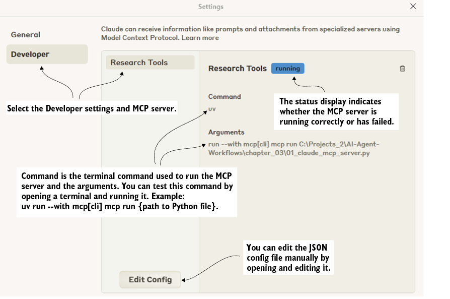
Figure 3.9 MCP server settings for the Python file
NOTE If you encounter errors stating that the tool cannot be loaded, refer to appendix B to install all prerequisites for working with MCP and Claude Desktop. If you are running Windows, you may need to reinstall or restart Claude after installing or configuring an MCP server.
The screenshot in figure 3.9 shows that the research tools server, which we developed in the Python file (listing 3.1), is running as an MCP server. If you have problems running the server, run the command shown in the settings dialog from your terminal. Common problems include not having uv installed, Python not being configured to run in the terminal, or an incorrect file path.
Once you confirm that the server is running correctly, you can close the settings window, start a new conversation, and enter the text get_research_sources, as shown in figure 3.10.
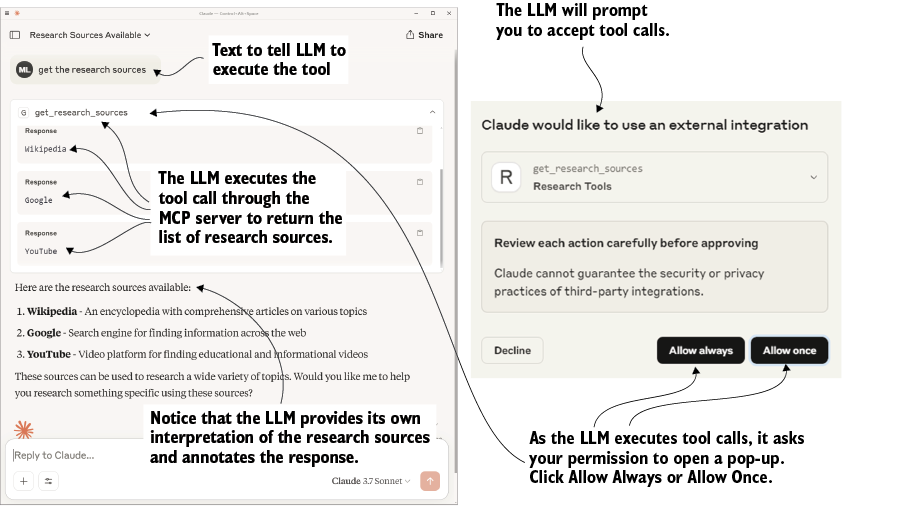
Figure 3.10 The MCP-hosted tool being executed within Claude Desktop
As the screenshot shows, you’ll first be prompted to allow the tool to execute after you press Enter. This safety feature built into Desktop requires your permission before the tool can run. When we develop agents, we won’t have such safety features, so it’s always essential to understand what a tool can do.
After you allow a tool to run, the LLM will execute it and return the list of research sources we previously configured in code. But the LLM annotates the research sources with additional information and comments because it wants to be helpful. When developing agents, we typically control this behavior in the instructions.
Claude Desktop can be an excellent way to exercise and run MCP servers and explore how an LLM may use the tools. Examining how well an LLM assembles and executes tools can help with a larger goal. But it lacks the finesse needed to explore an MCP server. Fortunately, MCP provides an inspector, which we’ll review in the next section.
3.2.2 Using the MCP inspector
MCP provides an inspector tool that lets you explore any server, whether remote, local, developed, or downloaded. The inspector is the first thing to reach for when a tool is not working as expected. It connects to your server and shows the live tool list with descriptions, parameters, and return types exactly as the agent sees them. It also lets you call any tool directly with arbitrary arguments to verify the response shape. It surfaces the raw JSON-RPC traffic between client and server so you can see exactly where a call is failing, and it shows initialization errors that would otherwise be invisible when an agent consumes the server. The most common use is to check that your decorator-generated schema matches what you intended, especially when the agent fails to pick a tool you know is registered. Listing 3.3 shows how to run the inspector on our previous research tools server.
Listing 3.3 Inspecting an MCP server
mcp dev {absolute path to file}01_claude_mcp_server.py #1
OUTPUT
Starting MCP inspector...
 Proxy server listening on port 6277
Proxy server listening on port 6277
 MCP Inspector is up and running at http://127.0.0.1:6274
MCP Inspector is up and running at http://127.0.0.1:6274  #2
#2
When you run the command, use the absolute path instead of a relative one. Otherwise, the inspector will not be able to run the file. Figure 3.11 shows the MCP inspector after it has connected to the research server.
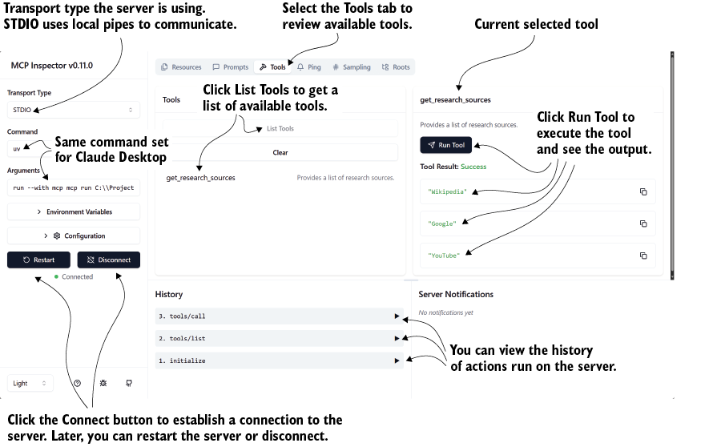
Figure 3.11 The MCP inspector interface examining available tools and executing them
The image illustrates the server’s connection. The Tools page is selected, and the tools are listed. After that, the get_research_sources tool is executed using the Run Tool button, which shows the tool’s output below the button. At the bottom of the page, we can see the history of operations executed on the server and the results of each operation.
One important thing to notice in the figure is the server’s use of STDIO as its transport type. The transport is STDIO because this is a local MCP server, launched as a subprocess that communicates with the client over standard input and output. The choice has nothing to do with running the server with uv. uv is the Python package runner that starts the server process, but the transport (STDIO, HTTP, or SSE) is determined by how the server itself is configured. The same FastMCP server from listing 3.1 can be run with HTTP or SSE transport by changing its startup configuration, and uv works fine for that case too. Let’s now turn to understanding the transport difference.
3.2.3 Understanding MCP transport types
We have already explored the two communication transport types that MCP supports: STDIO and SSE. The difference between these types is significant when consuming and building MCP clients or servers. Table 3.1 provides a detailed breakdown of each transport type, its underlying protocol, and its most suitable applications.
Table 3.1 Differences between STDIO and SSE transports for MCP servers
| Name |
How it works |
When you should use it |
|---|---|---|
| STDIO |
The client launches the MCP server as a subprocess on the same host and exchanges JSON-RPC 2.0 messages over the process’s stdin/stdout pipes. No networking stack is involved, so the link is low-latency but strictly one-to-one: only the parent process that spawned the server can talk to it. |
|
| SSE |
The MCP server runs as an HTTP service. Clients post JSON-RPC requests to |
|
We will consider using both types of transport for many of the agent workflows we develop in this book, but it is also worth considering these transport types in other LLM applications. Now let’s examine the key differences between agents and LLM applications such as Claude.
3.2.4 From desktop to agents: The key differences
Claude Desktop provides an excellent introduction to MCP, but it operates as an assistant rather than an agent. The distinction is not about whether the system asks for permission. Permission prompts are a security pattern, not an architectural one. Most coding agents (Claude Code, Cursor, Aider) ask for permission by default while still being agents in every meaningful sense. The actual difference is autonomy and the loop (figure 3.12). An assistant takes a single user request, decides what to do, does it, and stops. An agent runs a loop in which it can call tools, observe results, decide what to do next, and continue working toward a goal across many steps without returning to the user between steps.
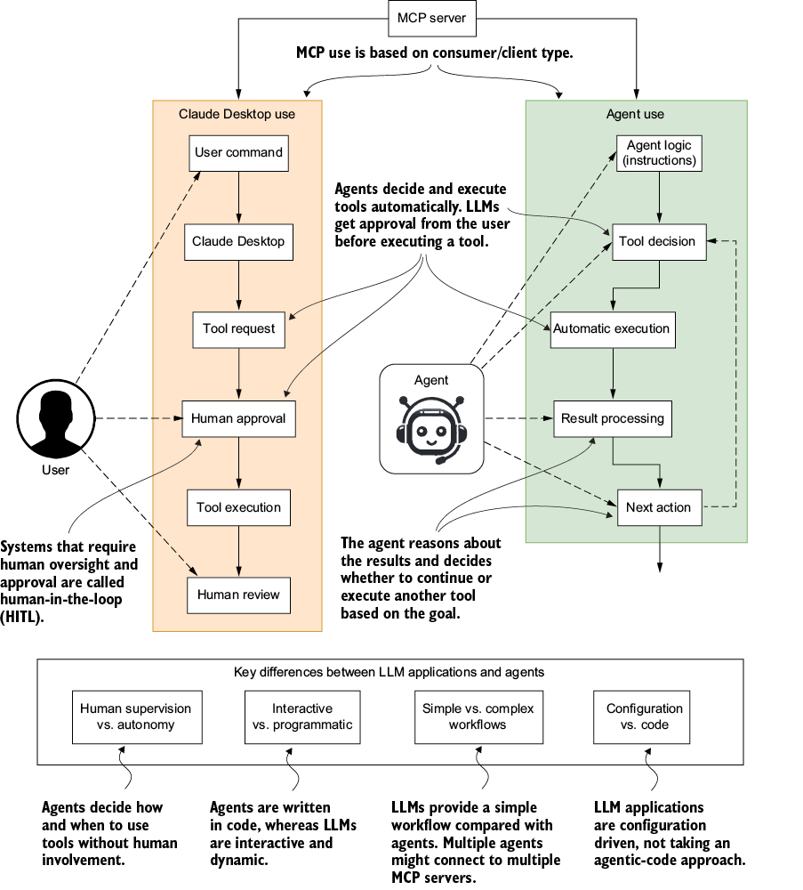
Figure 3.12 Comparing the execution steps an LLM application (assistant) and an agent perform when consuming tools from an MCP server. The key differences between MCP tool execution from an LLM application (Claude Desktop) or through an agent are these: assistants require human supervision, while agents are autonomous; assistants are interactive, while agents are programmatic; agents perform more complex, multistep workflows, while assistants are typically limited to simple plans.
Agency raises the stakes on tool design and tool selection. An assistant who calls one wrong tool gets one wrong answer. An agent who calls one wrong tool can chain that mistake into 10 more before anyone notices. This is why production agent systems pair MCP with a defense-in-depth posture. That posture includes tool allowlisting (the agent can only see tools the deployer has approved), sandboxing (tools that touch the filesystem or shell run in isolated environments), output validation (tool results are checked against expected schemas before the agent acts on them), rate limiting and budget caps (a runaway loop hits a ceiling instead of running indefinitely), and human-in-the-loop checkpoints for high-stakes actions (irreversible operations like sending email, transferring funds, or deleting data still ask before acting).
As we have already seen, tool execution with an LLM application always requires review and approval from a human. In contrast, an agent has the agency to decide which tool to execute and when and how to execute it. For this reason, in chapter 7 we aim to test and confirm that the agent’s tool use, whether with or without MCP, is always well defined and performs as expected.
Now let’s begin creating MCP servers with the OpenAI Agents SDK and examine the types of servers our agents will be able to consume.
3.3 Using MCP servers for agents
MCP servers embody the actions an agent can undertake. Agent actions are any acts an agent can perform to complete a goal. An action may involve using a tool, finding a resource, or even handing off to or engaging other agents.
We will use MCP to build and host our own tools, access APIs, interface with various data sources, and serve agents’ actions. Figure 3.13 illustrates the different methods for constructing and consuming MCP servers.
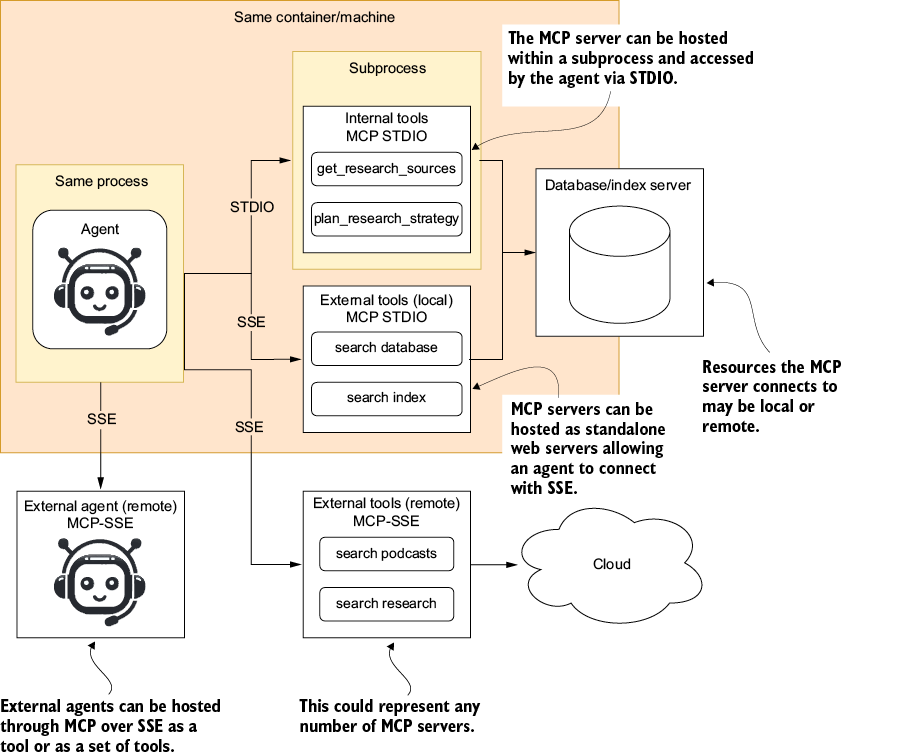
Figure 3.13 Various ways an agent may interact with MCP servers and consume them
As the figure shows, there are several ways in which we consume and use MCP to provide agents with tools or other actions. MCP servers may be locally hosted and run within a subprocess of the agent process, communicating using STDIO (standard input/output pipes). Alternatively, MCP servers may run external to the agent process and connect by SSE over HTTP while still running on the same machine or container. MCP servers may also run outside the machine, perhaps as a cloud resource accessed with SSE over HTTP.
Because the figure shows several MCP communication and deployment forms, table 3.2 summarizes the various deployment and connection scenarios.
Table 3.2 MCP use cases
| Use case |
Use |
Transport type |
Lives |
| Subprocess internal tools |
The Python process manages the MCP server as a subprocess. |
STDIO |
Internal process |
| Local external tools |
Expose standalone local services (for example, a search database or index). |
STDIO |
Local machine |
| Remote tools |
Call networked tool servers (Google, Wikipedia, podcast search, or research search). |
SSE |
Remote server |
| Remote external agents |
Invoke full-fledged agents or agent workflows hosted remotely, each exposing its own tool suite. |
SSE |
Remote server |
In this book, we will build and consume most of the MCP use cases featured in table 3.2. Using MCP, even internally, lets us keep a clean separation of concerns and makes the resulting code extensible and portable across agents.
The tradeoff is real and worth naming. MCP adds a server process, a client connection, and a protocol layer between the agent and the function it is calling. For tools that already run in the same Python process as the agent, that means extra latency on every call (typically a few milliseconds for STDIO, more for HTTP) and an extra failure mode (the server can be unreachable when the function would have just worked). It also means an extra layer of code to run, deploy, and debug. The right rule of thumb: reach for MCP when the tool is genuinely external (a different service, a different team’s code, a different deployment unit, or a capability you want to share across multiple agents) and prefer in-process function calls when the tool is internal logic that only this agent uses. Internal MCP for everything makes for clean architecture diagrams and noisy production systems.
While we will not cover all the use cases in the table in this chapter, we start by examining consumption of an MCP server with the agents SDK in the next section.
3.3.1 Using agents with local MCP servers over STDIO
Listing 3.4 shows how we can launch an MCP server from the code in listing 3.1. This lets us reuse the tool get_research_sources as an MCP server that runs in a subprocess and is controlled by the agent application. We can use this local hosting pattern, shown in figure 3.12, to load any local server through STDIO from a command-line subprocess, which is how Claude accesses its MCP servers.
Listing 3.4 02_mcp_agent_stdio_server.py
SCRIPT = Path(__file__).with_name(
"01_claude_mcp_server.py").resolve() #1
async def main():
async with MCPServerStdio( #2
name="Research Tools",
params=MCPServerStdioParams( #2
command="mcp", #2
args=["run", str(SCRIPT)],
),
) as research_server:
agent = Agent(
name="Assistant",
instructions="Use the research tools to perform research.",
mcp_servers=[research_server],
)
print("Running: Get the available research sources")
result = await Runner.run(
agent,
"Get the available research sources")
print(result.final_output) #3
if __name__ == "__main__":
asyncio.run(main())
OUTPUT
Running: Get the available research sources
The available research sources are:
1. Wikipedia
2. Google
3. YouTube
As long as the block runs, the subprocess remains active and the tool is accessible. When the block exits, the server shuts down. This pattern lets us run and consume any server locally that we can launch as a subprocess of the agent. It also lets us manage the startup and shutdown lifecycle entirely within the agent service.
One thing worth pausing on before the next section: the server we will consume in listing 3.7 is @modelcontextprotocol/server-filesystem, a Node.js implementation, launched with npx. Our agent is Python. We did not write a binding, install a Node-to-Python bridge, or do any cross-language plumbing. This is one of MCP’s most compelling practical advantages. The protocol is language agnostic at the wire level, which means a Python agent can consume a Node.js server, a TypeScript agent can consume a Rust server, and a Go agent can consume any of them. The agent and the server only need to agree on the MCP protocol, not on a language, runtime, or framework. In production, this is what makes MCP a genuinely portable integration layer rather than another framework lock-in.
The next section examines how to consume local, out-of-process MCP servers using STDIO.
3.3.2 Using local MCP servers over SSE with agents
You may find that some MCP services don’t run optimally when hosted locally in process, so you may decide to run the MCP server as an HTTP server and connect via SSE. Before demonstrating this, we need to run our previous MCP server from the command line.
Listing 3.5 Running the MCP server over SSE
cd chapter_03 #1 mcp run -t sse 01_claude_mcp_server.py #2
This command runs the file as an MCP HTTP server using SSE for transport. We can do this because the FastMCP class in listing 3.1 supports STDIO and SSE. When running the file in process, the server defaults to STDIO, but when run externally through a command, we can set it to SSE. This allows us to keep the MCP server running and lets multiple agents connect.
The following listing shows the modifications we need to make to our previous example to support this switch to SSE.
Listing 3.6 03_mcp_agent_sse_server.py
# only relevant section shown
async def main():
async with MCPServerSse( #1
name="SSE Python Server",
params={
"url": "http://localhost:8000/sse", #2
},
) as research_server:
agent = Agent(
name="Assistant",
instructions="Use the research tools to perform research.",
mcp_servers=[research_server], #3
)
The only significant change to the code is swapping the server implementation to use SSE and providing a URL to connect to rather than a command. This flexibility enables your code to be adapted easily to other transport protocols and, of course, other MCP servers. In the next section, we explore some of the standard MCP servers we can interact with.
3.3.3 Connecting to the standard MCP servers
Anthropic provided several reference implementations of shared servers in the MCP release. These servers provide a standard set of tools that we can immediately use without having to build our own. The list continues to grow, and table 3.3 provides some notable examples.
Table 3.3 Common standard MCP servers
| Name |
Description |
Run with (npx ...) |
Use case |
| Filesystem |
Secure local filesystem access (read/write) within a folder |
|
Open, edit, or create local files through an AI assistant |
| Sequential thinking |
Decompose tasks and plan complex goals |
|
Decompose a goal into tasks that can be planned and executed |
| Google Drive |
Browse, search, and retrieve files from Google Drive |
|
Access or share cloud documents and collaborate via AI |
| Google Calendar |
Read calendars, find free slots, and add/remove events |
|
Schedule meetings or check your agenda with natural-language requests |
| Todoist |
Task management interface to list, create, or complete to-dos |
|
Keep personal or team to-do lists up to date |
| Notion |
Read, update, or create Notion pages and databases |
|
Manage notes, wikis, and project plans programmatically |
| Slack |
Post messages and read channels via the Slack API |
|
Send alerts or summarize discussions inside Slack |
| Brave Search |
Perform web searches and return ranked results |
|
Retrieve fresh web information or do quick research |
| GitHub |
Browse repos, read files, create commits/PRs |
|
Automate code reviews, update docs, or fetch project files |
| Google Maps |
Look up places, directions, and travel data |
|
Answer location or routing questions and plan trips |
| Fetch |
Fetch and preprocess web page content for LLMs |
|
Pull article or API data, then summarize or analyze it |
MCP also makes connecting to and running servers straightforward, without the need for complex dependency installations. We add code to run the server locally using the provided MCPServerStdio class, and the framework handles the subprocess lifecycle for us. Listing 3.7 shows our previous Python in-process file server upgraded to use the MCP Filesystem server.
One prerequisite worth flagging: the Filesystem server is a Node.js package launched with npx, so Node.js and npm need to be installed on your machine. If you do not have them, install Node.js from nodejs.org (npx ships with it). The Python side does not change.
Listing 3.7 04_mcp_agent_server_files.py
async def main():
current_dir = os.path.dirname(os.path.abspath(__file__)) #1
async with MCPServerStdio( #2
name="Filesystem Server, via npx",
params={
"command": "npx",
"args": ["-y",
"@modelcontextprotocol/server-filesystem", #3
current_dir],
},
) as server:
agent = Agent(
name="Filesystem Agent",
instructions="Use the filesystem tools to help the user with their tasks.", #4
mcp_servers=[server],) #4
print("Running: Get the available files")
result = await Runner.run(agent, """
List the files in the current directory.""")
print(result.final_output)
if __name__ == "__main__":
asyncio.run(main())
OUTPUT
- **Files:** #5
- 01_claude_mcp_server.py
- 02_mcp_agent_stdio_server.py
- 03_mcp_agent_sse_server.py
- 04_mcp_agent_local_server_files.py
… continued
By adding the MCP Filesystem server, we now give the agent access to the script’s folder. This means it can list, open, read, write, delete, and create files in this folder. For this reason, you should generally be careful to isolate the folder you provide to this server.
Generally, when using any MCP server, you want to validate and verify its functions and operation. You also need to understand what a server can do on behalf of your agent. Agents are often beneficial, but like a naive child, their interpretation of help may not always lead to the best outcomes.
Fortunately, there are several ways to mitigate and avoid risks, such as building your own MCP servers. Building your own servers allows you to access resources you might not otherwise have access to and control access to various MCP tools. As we’ll see in the next section, building your own MCP services gives you control over your agents’ actions.
3.4 Building MCP servers for agents
For this final section, we will look at an example in which we transition an agent using self-hosted tools to one that uses an MCP server that wraps and provides the same tools. This will require us to copy the internal tools into another file that wraps them within MCP. Figure 3.14 shows an example time-tracker agent whose role is to track time-travel events, record them, and return a summary of the entire journal when asked.
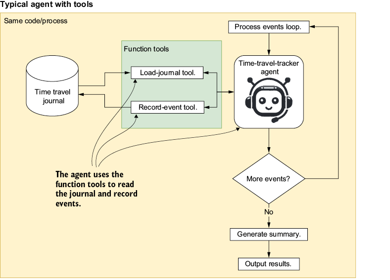
Figure 3.14 The time-tracker agent records time events using the record_event tool as it processes the events in a loop. After the loop finishes, the agent is asked to summarize the events, and it uses the load_journal tool to load the journal and summarize them.
In the figure, the agent runs in a loop, and within each cycle it captures a time travel event and records information about that event. We can see that the agent accesses the tools internally from its own codebase. The tools are for recording time travel events (record_event tool) and retrieving all the events in the journal by using the load_journal tool. After all the events have been recorded and the loop completes, the agent is asked to generate a summary, which it does by using the load_journal tool and then summarizing and outputting the results. The following listing shows this example agent, complete with tools.
Listing 3.8 05_time_travel_agent.py
_journal = [] #1
@function_tool
def record_event(entry: str) -> dict: #2
"""Add a new travel event to the journal."""
_journal.append(entry)
print(f"Event recorded: {entry}")
return {"status": "recorded", "entry": entry}
@function_tool
def load_journal() -> dict: #3
"""Load the current travel journal entries."""
print("Loading journal entries...")
return {"status": "loaded", "journal": "\n".join(_journal)}
agent = Agent(
name="Time Tracker Agent",
instructions="""You are a time tracking journaling agent.
Always use the 'load_journal' tool at the start to get past entries.
For a new event, call 'record_event' to save it.
If asked for a summary or to show the journal, output all recorded events.""",
tools=[record_event, load_journal], #4
)
# Simulate a series of historical travel events
travel_events = [
"Traveled to Ancient Rome and watched a gladiator fight",
"Visited the signing of the Declaration of Independence in 1776",
"Witnessed the moon landing in 1969",
]
async def main():
print("Recording travels:")
for event in travel_events: #5
await Runner.run(agent, event)
# Ask the agent to summarize the adventures
result = await Runner.run(agent, "Show my travel history")
print("\nFinal Journal:")
print(result.final_output)
asyncio.run(main())
The example is fabricated. Tool use is common, but this specific example demonstrates the concept of temporary or scratchpad memory for agents. We often have agents record information in journals, scratchpads, or memory (covered in chapter 6) for later retrieval by themselves or other agents. Each execution of the agent within the loop runs as a fresh invocation, so without something like a journal, the agent has no view into activities that came before it. The journal tools fill that gap.
One thing to flag before reading the code: the journal in this example is implemented as a module-level in-memory list. That works fine for a single agent in a single process, which is what we have here. When we move this same code into an MCP server in section 3.4.1 and connect multiple agents to it over SSE, the same module-level list becomes shared state across every agent connected to that server. That is a different architectural shape with different correctness properties, and we will return to it in section 3.4.2. For now, read the code knowing that the in-memory journal is a deliberate choice for the single-agent demonstration, not the right shape for a multi-agent deployment.
Tip We often encounter situations where agents need to review large sets of information. To achieve this, we implement a form of temporary or long-term storage so the agents can summarize highlights, events, or other data, thereby preventing context overload. That storage can take the form of a scratchpad, journal, or memory.
We will see more uses of this scratchpad activity when we explore the reasoning and planning chapters, as well as the memory and knowledge chapters. Because this is such a typical pattern, we may decide to convert these tools into an MCP server. In the next section, we look at how the tools can be transitioned to an MCP server that the agent can consume.
3.4.1 Converting tools to an MCP server
The MCP SDK tools provide an easy way to convert agent tools to ones hosted on an MCP server. Not only does this separate concerns between the agent and tool code, but it also lets you easily reuse those tools with other agents. Figure 3.15 shows our updated time-travel-tracker agent configured to consume an MCP server that hosts the journal tools.
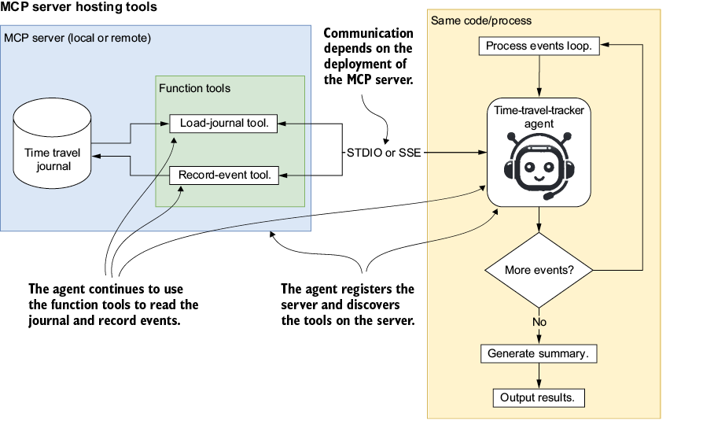
Figure 3.15 The separation of tools from the agent into a standalone MCP server that can be hosted locally or remotely and accessed through STDIO (local) or SSE (remote). Now the agent registers the MCP server instead of individual tools and then internally discovers the tools the server supports and how to use them.
All we need to do now is split the code into two files: one for the MCP server and the tools, and the other for the agent. The next listing shows how the tools are moved into a standalone MCP server (Python file) that can be hosted locally or remotely.
Listing 3.9 06_mcp_time_travel_tracker.py
from mcp.server.fastmcp import FastMCP
mcp = FastMCP("Time Travel Tracker")
_journal = [] #1
@mcp.tool() #2
def record_event(entry: str) -> dict:
"""Add a new travel event to the journal."""
_journal.append(entry)
print(f"Event recorded: {entry}")
return {"status": "recorded", "entry": entry}
@mcp.tool() #2
def load_journal() -> dict:
"""Load the current travel journal entries."""
print("Loading journal entries...")
return {"status": "loaded", "journal": "\n".join(_journal)}
if __name__ == "__main__":
mcp.run(transport="sse") #3
The code itself is straightforward. The tools we built earlier now live in a new file, wrapped with the MCP decorator. Internally, tool discovery, communication, and execution are all managed through MCP.
What looks like a copy–paste is actually an architectural shift worth naming. Before this rewrite, the agent and the journal tools shared a Python module, a process, and an implementation. The agent could see the _journal list directly. The tools could reach into the agent’s state if they wanted to. Everything was coupled.
After the rewrite, the agent and the tools communicate only through the MCP protocol. The agent sees a tool name, a description, a parameter schema, and a return type. It does not see (and cannot reach) the implementation behind the tool. The journal could be backed by a Python list, a Postgres table, a Redis cache, or a remote API, and the agent’s code would not change. This is the separation of concerns that the protocol gives us. The interface contract is the tool schema; the implementation is the server’s private business.
That separation is what makes tools composable across agents, replaceable across deployments, and shareable across teams. We will use it in the next section by consuming this MCP server and its tools over STDIO (local) or SSE (remote) to process or interact with remote systems.
3.4.2 Consuming MCP servers locally or remotely
To consume this new MCP server, we have two options: run it locally in a controlled subprocess over STDIO, or set it up to run remotely and consume it through SSE. For the most part, MCP abstracts away the technical details, but there are slight differences in the code. Listing 3.10 demonstrates how we add, register, and consume an MCP server that hosts the journaling tools.
This code demonstrates wrapping a server around the agent with the with clause and then passing the server to the agent so it can discover and understand the tools the server provides. We can run or debug this code, and you will get output similar to that of listing 3.8, but you won’t be able to see any reporting from the MCP server.
Listing 3.10 06_time_travel_agent_mcp_stdio.py (excerpt)
async with MCPServerStdio( #1
name="Time Tracker Server",
params=MCPServerStdioParams( #2
command="mcp",
args=["run", str(SCRIPT)],
),
) as time_tracker_server:
agent = Agent(
name="Assistant",
instructions="""
You are a time-travel journaling agent.
Always use the 'load_journal' tool at the start to get past entries.
For a new event, call 'record_event' to save it.
If asked for a summary or to show the journal, output all recorded events.
""",
mcp_servers=[time_tracker_server], #3
)
An alternative to running alongside the agent process is to run the agent in a completely separate process, which may be local to the machine or remote. The next listing demonstrates the same agent running through an SSE wrapper to connect over SSE (HTTP).
Listing 3.11 06_time_travel_agent_mcp_sse.py (excerpt)
async with MCPServerSse( #1
name="Time Tracker Server",
params={
"url": "http: //localhost:8000/ sse", #2
},
) as time_tracker_server:
agent = Agent(
name="Assistant",
instructions="""
You are a time-travel journaling agent.
Always use the 'load_journal' tool at the start to get past entries.
For a new event, call 'record_event' to save it.
If asked for a summary or to show the journal, output all recorded events.
""",
mcp_servers=[time_tracker_server], #3
)
To run this code example, you will first need to run listing 3.9 as a standalone MCP server in a new terminal or PowerShell window with a command such as
python 06_time_travel_agent_mcp_sse.py
Whether you run the MCP server over STDIO or SSE, you should see similar results. You may get some duplicate journal results if you connect two or more agents to the SSE (HTTP server) implementation. This is because the process the server runs in is not created every time, but instead agents connect to it. That means the in-memory journal used on the server could be updated by multiple agents, including the same agent more than once.
As we can see, MCP not only makes the transition from tools to servers very easy, but it also provides the benefits of separation of code, code reuse, and code isolation. Thinking in terms of MCP servers also provides the benefit of encapsulating tools within servers. This allows us to think of tools in sets that are wrapped in MCP for agents or other LLM applications.
3.5 Exercises
Exercise 1: Fire up and inspect your first MCP server.
Objective: Experience the full loop of install > run > inspect for a single-tool server.
Tasks:
- Copy 01_claude_mcp_server.py to exercise1_run_mcp.py.
- In that folder, run
mcp run -t sse exercise1_run_mcp.py. - Open a second terminal and launch the inspector with
mcp dev "$(pwd)/exercise1_run_mcp.py"
- Navigate to the printed URL (e.g.,
http: //127.0.0.1: 6274). - On the Tools page, select get_research_sources > Run Tool and verify the three sources.
- Stop both terminals when finished.
Expected duration: 7 minutes
Exercise 2: Call the server from an agent over STDIO.
Objective: Launch an MCP server in process and drive it with the OpenAI Agents SDK.
Tasks:
- Duplicate listing 3.4 (02_mcp_agent_stdio_server.py) as exercise2_agent_stdio.py.
- Change the agent instructions to “List the available research sources.”
- Run the script and confirm the console shows a three-item list.
- Edit
get_research_sourcesin 01_claude_mcp_server.py to return only two items, then rerun and confirm that the output now shows two.
Expected duration: 10 minutes
Exercise 3: Flip to SSE without changing agent logic.
Objective: Show that swapping MCP transports is a one-line change.
Tasks:
- Copy exercise2_agent_stdio.py to exercise3_agent_sse.py.
- Replace
MCPServerStdiowithMCPServerSseand set the URL tohttp: //localhost:8000/ sse. - Remove the
commandandargsparameters. - Start the SSE server with
mcp run -t sse 01_claude_mcp_server.py
- Run exercise3_agent_sse.py and confirm the output matches exercise 2.
Expected duration: 8 minutes
Exercise 4: Wrap and restrict directory-lister-only server
Objective: Expose just one tool from the filesystem server.
Tasks:
- Copy listing 3.7 to exercise4_wrapper.py and rename the server to “Mini FS.”
- Remove every
@mcp.toolexcept the one that lists directory contents. - Create exercise4_test_wrapper.py that connects via
MCPServerStdioand callslist_directory. - Run the tester; verify exactly one tool is listed and filenames are returned.
Expected duration: 12 minutes
Exercise 5: Turn an agent into a reusable MCP tool.
Objective: Package the time-travel-tracker agent as an MCP server and consume it from another agent.
Tasks:
- Copy listing 3.9 to exercise5_tracker_server.py and run it so it serves via SSE on port 8000.
- Create exercise5_consumer_agent.py based on listing 3.11. Replace the sample travel events with three of your own.
- Run the consumer script and confirm a summary of all recorded events prints to the console.
- Open OpenAI Traces and verify two runs: the outer assistant and the MCP-hosted time tracker.
Expected duration: 15 minutes
Summary
- MCP is like a USB-C for LLMs and agents—a JSON-RPC-2.0 spec that erases bespoke glue code for tools, data sources, and even other agents.
- MCP solves fragmentation (multiple tool schemas), brittle data access, ad hoc orchestration, and uneven security by giving every capability a uniform interface.
- MCP supports three components: tools (actions), resources (data/objects), and prompts (reusable templates). Agents can treat any of them as callable verbs.
- MCP architecture is in three parts: MCP client, server, and the service/resource it fronts. An agent is just one kind of client.
- STDIO—subprocess, zero-latency, single caller (great for local development).
- SSE, HTTP and server-sent events, multiclient, cloud-friendly. Switching is literally a constructor swap.
- MCP is not just for tools/actions but can also support the other functional layers (reasoning and planning, knowledge and memory, evaluation and feedback).
- MCP can be deployed using a mixture of patterns: local, remote, or hybrid. Mix and match to keep sensitive operations local while sharing heavy APIs remotely.
- The MCP inspector gives a live, clickable view of any server, perfect for debugging tool schemas and outputs before wiring agents to them.
- MCP reference servers are available for use or inspection and include filesystem, Brave Search, Google Calendar, GitHub, and others, all installable with a single npx or mcp run.
- Agents themselves can be wrapped as servers, turning an entire reasoning pipeline into a reusable, strongly typed tool.
- Typed Pydantic I/O flows end-to-end, eliminating fragile string parsing in multi-agent chains.
- MCP enables LEGO-style composition of agent systems, with each block isolated, testable, and instantly swappable without touching the others.